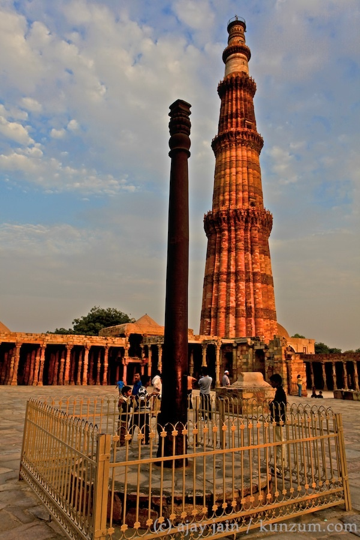

~ Places to Visit in Delhi ~
Popular things to do

Monuments

Parks
Top Attractions in Delhi
Delhi Tobacco Museum & Heritage Centre
This is a great little museum with colourful, engaging
exhibits so you can learning about the unique farming
of this area. Situated atop a small hill overlooking
Quance Park in Delhi, Ontario, this open-concept museum,
built in 1979 as a model of a typical tobacco pack barn,
houses a large agricultural collection which includes exhibits
on tobacco, ginseng and alternative agriculture grown in
Norfolk County.
Ramblin' Road Brewery Farm
Ramblin' Road Brewery Farm is a destination like no other.
A microbrewery, producing 11 varieties of Hops, 9
varieties of Premium Craft Beer and Kettle Chips. Our
restaurant and patio feature the Original beer-house burger,
chicken and vegetarian platters, chicken wings and artisan
pizza. Samples are available as well as flights of beer and
by-the glass service. Retail beer options of kegged,
bottled and Tall Boy 6 packs.
Backstage Capitol Theatre
Converted back into a theatre, the historic building is
now known as the Backstage Capitol and is the home of a
local dance and theatre groups. Delhi's Backstage Capitol
Theatre, with its superior acoustics and intimate setting,
attracts audiences and performers alike from
Quance Park
The Delhi Quance Park and Mill highlights the beauty of the
Big Creek River Valley as it meanders through the Town of Delhi.
The Mill and river was critical in the establishment of Delhi.
The sawmill was the first real industry in the area and pre-dates
the arrival of the Tobacco Industry.

India Gate
At the centre of New Delhi stands the 42 m high India Gate,
an “Arc-de-Triomphe” like archway in the middle of a crossroad.
Almost similar to its French counterpart, it commemorates the
70,000 Indian soldiers who lost their lives fighting for the
British Army during the World War I.

Red Fort
Built by Mughal emperor Shah Jahan as the palace fort of his capital
Shahjahanabad, the Red Fort is famous for its massive enclosing
walls. The fort's construction was completed over a span of ten
years, between 1638 and 1648.
Woodside Greens Golf Club
Built in 1993 among some of the finest woodlands in
Southern Ontario, this course is designed to bring
your golf game into nature. the borders of Savanna
grasslands are amazingly shielded by flourishing
stands of towering red oaks and giant maples.
Jantar Mantar
The Jaipur astronomical observatory, Jantar Mantar—thought
to have been built by the enlightened ruler Sawai Jai Singh II
in 1729—is one of the world's most accurate pre-modern observatories,
and attests eighteenth-century efforts to improve understanding of
planetary and other cosmic movements.

Qutub Minar Iron Pillar
The iron pillar is a structure 23 feet 8 inches high with
16 inches in diameter that was built by a "King Chandra,"
Chandragupta II, and now stands at Mehrauli in Delhi, in
the Qutb complex. It is known for the rust-proof nature
of the metals used in its construction.
Sarojini Nagar Market
Sarojini Nagar market is famous for clothes shopping,
decorative item shopping and you can also buy cheap
backpacks in Sarojini Nagar market. The market also
boasts of its wide range of home decor items like
cushions, cushion covers, paintings and fancy lamps.

MSwaminarayan Akshardham
Akshardham Temple of Delhi is one of the prime attractions
in Delhi where one can witness exclusive architectural
charm with more than 234 beautifully carved pillars,
9 elaborate domes, 20 quadrangle spires and 20000
sculptures of spiritual personalities from India.
Gurudwara Bangla Sahib
Gurudwara Bangla Sahib ( listen) is one of the most prominent
Sikh gurdwara, or Sikh house of worship, in Delhi, India,
and known for its association with the eighth Sikh Guru,
Guru Har Krishan, as well as the holy pond inside its complex,
known as the "Sarovar." It was first built as a small shrine
by Sikh Genera